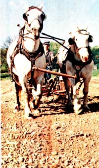

Three years ago at this time, Aaron (my husband) and I said to ourselves, "When next spring rolls around, we're going to split from our jobs, take off with our life savings of $4,000, and look for a place in the country." Our hope was that somewhere in Missouri, Arkansas, Kentucky, Tennessee, Ohio, or New Mexico we'd be able to [1] find a little homestead, [2] surround ourselves with goats and chickens, [3] raise a big garden, and [4] just enjoy life.
Back then, we definitely weren't enjoying life. Aaron worked as a reporter for the local (Akron, Ohio) newspaper and I taught school part time, and we were both bored. In our spare moments, we devoured books and magazines on fanning (when we weren't caring for our small garden) and tried to learn everything we could about self-sufficiency. Yet despite all our reading-and despite the fact that Aaron had grown up on a farm-we both had very little firsthand knowledge of the skills that one needs if he or she expects to live on the land.
Luckily for us, however, we didn't have to spend a penny of our savings in search of that farm we'd been dreaming about. Instead, in January 1974-six months or so before our scheduled quest for independence was to begin-serendipity struck: Aaron was hired as the farmer at the Hale Farm and Village, a restored 1810 homestead in Peninsula, Ohio.
Needless to say, we were thrilled at this unexpected opportunity to see what real-life farming was all about. When we began work at the farm, however, we received a thrill of a different sort.
We simply didn't know where-or how-to begin! Twenty-two head of cattle, four horses, two ponies, six hogs, two goats, twenty sheep, and countless geese, ducks, and chickens each seemed to demand our immediate attention. The sheep roamed where they pleased. The horses ran the cows away from the hay. The goats were into every feedbox on the place. And to make things more difficult for us, the daily temperature was an icy ten degrees Fahrenheit.
This wasn't what we had envisioned, and the unexpected pressures soon began to take their toll. We both developed insomnia and quit eating. Giant hogs loomed up in Aaron's dreams when he did sleep, and I heard the cows mooing long after we'd left the farm in the evening to go home. Day after day, we dragged our weary selves through the chores ... and, at night, attempted to soothe our aching muscles with hot baths, heat pads, and ointments.
This was not the farming life we'd read or dreamed about! We walked miles each day just to feed the animals (the fodder and the livestock were lo cated on two widely separated parts of the farm). We'd go to fix a fence and forget the hammer or wire-stretchers. We'd hitch a horse to a wagon and discover-too late-that the harness was on upside down. And when the ewes began to lamb, we panicked!
Little by precious little, however, life changed ... for the better. Aaron and I culled herds and fixed miles of fencing. Eventually, the sheep got their own pasture and the horses were moved into new stalls behind the barn. (And we built still another stall-more like a cage-for the goats!)
One of our biggest initial problems was learning how to manage our draft horses, Cap (1,800 pounds) and Linda (who tipped the scales at a petite 1,400 pounds). While one pulled everything at a gallop, the other plodded (and was dragged) along. The two horses, in short, were mismatched and quite a bit more than a pair of rank beginners (us!) could handle ... but-with help from several sources-we were ultimately able to learn how to work with, rather than against, the two animals.
The Draft Horse Journal ($6.00/yr. from Rt. 3, Waverly, Iowa 50677) has been tremendously helpful to us and has provided us with priceless info on how to care for, buy, and work with the drafters. Besides that, Aaron found the Journal's reports on people who were farming successfully with horses to be great morale-boosters ... particularly after a hard day's work with our arm-wrenching team of Percherons.
Likewise, we read some informative stories in THE Mother Earth News(restricted) on farming with horses. (Books on the subject are rare, so every bit of info is valuable.) MOTHER NOS. 26, 27, 30, and 32 were particularly useful.
Also, we attended a six-day course at a school in Vermont where we were taught harnessing, ground driving, backing, and log skidding. (If you want to find out more about such seminars, check for draft horse schools in The Draft Horse Journal or write Indian Summer Farm, Cabot, Vermont 05647.)
I should mention too that we owe a debt of gratitude to our friend Vince D'Amico, whose help, patience, and understanding have been (and continue to be) a true lesson in friendship.
Thanks to all of the above, we've finally learned how to manage our draft horses. Now-with the aid of an old horse-drawn manure spreader, disc harrow, and mower that Aaron bought a year ago-we're able to use our team of Percherons to do most of the draft work around the farm.
At any rate, by the time spring rolled around that first year, we were starting to get a handle on things and we were ready to move onto the farm full time and begin putting in the crops. (We hand-planted oats, corn, and pumpkins.)
Today we produce 75% of our own food. We can homegrown tomatoes, make cabbage into sauerkraut, and cure-that is, dry and then stores-quash, onions, and potatoes. (About 30 pounds of seed potatoes annually keep us in spuds.) A year ago we bought a Guernsey cow for the farm, and now every day we collect, strain, and cool four gallons of milk from the old girl. Each week one of us chums butter, and twice a year I make cheese.
Aside from what we learn by doing our regular chores, we continue to read to gain insight and experience. Books such as Veterinary Guide for Farmers (Stamm), Horseshoeing (Lungwitz), The Complete Horseshoeing Guide (Wiseman), and Starting Right With Goats (Walsh)-all available from MOTHER'S Bookshelf-have been exceedingly helpful. Another fine reference is F.B. Morrison's Feeds and Feeding ($6.50 from The Interstate, 19-26 N. Jackson St., Danville, Ill. 61832).
As for periodicals, The Draft Horse Journal and Farm and Dairy-a local (Salem, Ohio) farm newspaper-both feature excellent articles on the care of horses and other livestock. And of course we read MOTHER ... the gal who got us thinking about all this in the first place.
The temptation for us to rush out and blow our meager savings on a piece of land "somewhere" was very great in the beginning ... but I'm glad now that we resisted the urge. Our limited capital (yes, money IS necessary) and lack of skills would-quite likely-have plunged us into a shortlived, doom-filled escapade. (Romantic visions of verdant pastures populated by smiling Walt Disneyish cows are, we found, easily shattered.)
We don't know all there is to know about running a farm after only two years on the land-far from it!-but at least we know how to trim a hoof, shear a sheep, deliver a lamb or calf, and plow a field ... skills which make farm life both possible, and a joy.
We all spend years in schools and colleges to "prepare" ourselves for a job. So why not invest a few years in the preparation for a way of life? Grow a garden, help the farmer down the road bale his hay, keep a goat or cow (and milk her twice a day), read, learn . . . in short, prepare for the move to the country. If you're like us, you'll find that such efforts will be well spent.
|
 |
|
|